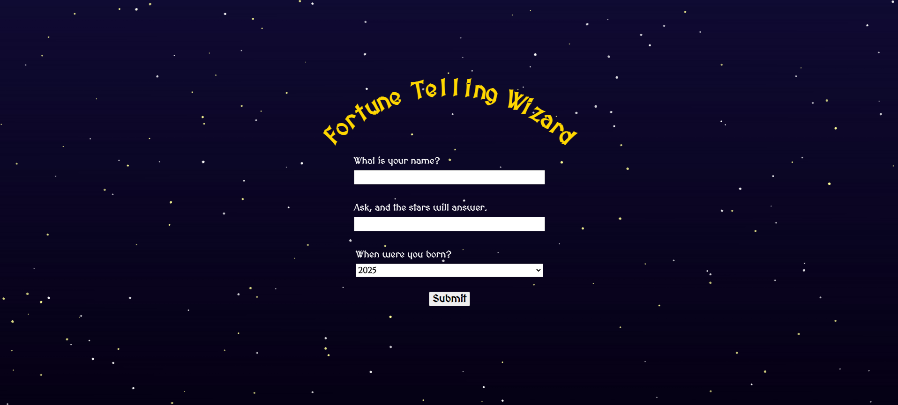
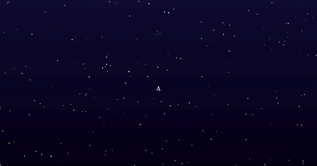
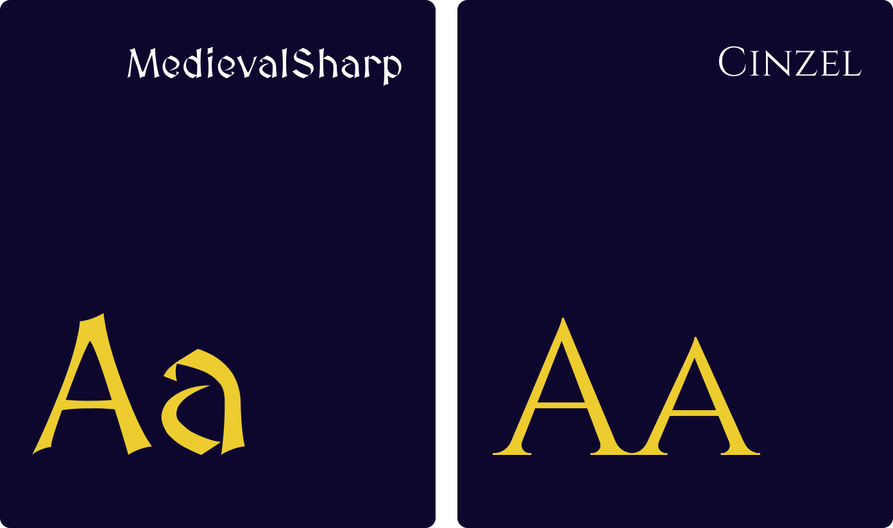

The Fortune Telling Wizard draws inspiration from traditional Chinese fortune-telling practices, particularly Bazi (Four Pillars of Destiny), and translates them into an interactive, web-based experience. Influenced by a collaborative physical computing project that I was working on at the same time, this mini version utilizes p5.js and OpenAI API to capture the mystical essence of Chinese fortune-telling in a user-friendly digital format.

The application invites users to enter their name, birth year, and a question to receive a fortune rooted in Bazi principles. Designed with a whimsical and playful tone, the project blends cultural elements with modern interaction design, using visuals, music, and AI to create a personalized experience.
I designed and developed this web application from concept to deployment, handling the complete development lifecycle. This included user experience research, frontend development with p5.js, custom OpenAI API integration, responsive design, and API optimization.
Key inputs include the user's name, birth year, and a personalized question. The starry, animated background sets an ethereal, contemplative tone. A golden rainbow-arc header titled "Fortune Telling Wizard" focuses attention and aligns with themes of prosperity.
Mysterious looping guitar music auditory layer complements the visual storytelling, adding depth and mystique. Subtle user experience details, like dynamic cursor changes on buttons and hover animations. Implemented a gradual text reveal mechanism, mimicking the unfurling of a scroll, to build suspense and enhance the immersive nature of the fortune-telling experience.

Integrated OpenAI API to generate personalized, whimsical fortune-telling responses, guiding the AI with a custom system prompt to adopt the role of a Chinese Taoist fortune-teller. Ensured outputs adhered to specific formatting, including "As you were born in the year of..." and elements from Bazi, while incorporating randomness.
MedievalSharp evokes ancient scrolls and mystical texts. Cinzel provides Roman elegance and ceremonial gravitas. Together they create an authentic fortune-telling atmosphere that feels both mystical and trustworthy.
